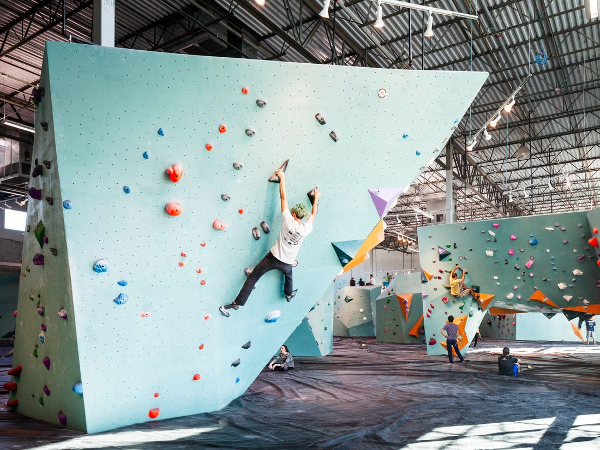

Streamlining Member Services
The Challenge
Austin Bouldering Project is an all-in-one co-working space, bouldering gym, yoga studio, and fitness center in Austin, Texas. Members of ABP are able to edit and modify their accounts using the ABP website, however, prior to this project, members were experiencing friction when trying to access and edit their accounts on the website.
A button labeled ‘My Account’ was placed in a side panel (pictured below), which was difficult to find, lacking any affordances as to who the button was for and where the button would take the user after clicking. So, I got high-level support and set out on a journey to redesign the online membership feature using a user-centered design process.

Process
Testing The Feature
Usability Testing
To test the ‘My Account’ button, I began by conducting usability tests with current and new members, prescribing various tasks to measure task-success rates. I also chose to utilize the Litger scale as a way to measure user satisfaction after completion of a task. This entailed asking each participant to rate the completed task on a scale from 1-5, with 1 being very easy and 5 being very difficult.
In total, I facilitated 8 usability tests. As hypothesized, even with the ‘My Account’ button on every single page of the website, it went unnoticed by every user.
The usability tests allowed me to see how users find information, which navigation components are utilized, which ones go unnoticed, and which ones are avoided. Utilizing the Litger Scale also provided me with additional qualitative data into how users felt about the tasks overall.
Key Usability Test Results
✍️
20% out of the 5 prescribed tasks were successfully completed.
✍️
20% of users were able to find the ‘My Account’ button, however, each user took longer than 30 seconds and needed more than 3 clicks to find it.
🧐
To my surprise, I discovered the task-success rate did not correlate with the user’s Litger rating. Several participants rated a task with a 1 or 2 (very easy) even though they were unable to complete the task and/or verbally grieved about a component on the interface.
Information Architecture
Open Card Sort
Next, I tested the information architecture (IA) with an open card sort. I wanted to understand and measure how the user would expect to see the navigation organized on the Austin Bouldering Project website.
In an open card sort, participants sort cards with labels coming directly from the website’s navigation into categories that make sense to them and then title each category themselves (pictured below on the left). In total, I conducted 7 card sorts while also conducting casual interviews with each of my participants.
Insights & Findings:
🧐
The navigation labels on the site, for the most part, were understandable to recurring members, however, some labels suprised us and weren’t intuitive at all. For instance ➡️
✍️
100% of participants believed "Team" represented the staff of ABP, rather than a kid’s competitive climbing team.
✍️
60% said "My Account" would only allow users to make payments on their membership (which is false).
Competitive Analysis
Next, I performed a light competitive analysis to discover any opportunities we might have to create a more intuitive and delightful user experience. Instead of just creating a checklist of comparative features, I assessed our competitors (in co-working & fitness center spaces) based on common user scenarios: Search, Edit Account, and Submit Change.
It turned out that we actually had a lot of the core features our competition had. However, there was still a massive opportunity to be had in the design and development of those items and functionalities. Armed with inspiration from the competitive analysis, I embarked on some high-level brainstorming of core issues in the flow.
New Areas of Focus:
1️⃣
Explore an experience that offers multiple ways of discovering the feature (deep browsing and shallow).
2️⃣
Explore a system that offers consistency. It can flex for more complicated items (i.e. being a fitness center and a co-working space was tricky to find comparisons).
Ideation
After presenting my research findings from the usability tests, card sort, and competitive analysis, I convinced my stakeholders to perform a couple round of crazy 8's with my team.
We iterated on our best ideas by sketching them out on white-boards. Because of this small ideation session, I was able to quickly develop the first user flows without touching a single pixle.

Wireframing & Testing
After ideation, I began to build my first digital prototype. I conducted multiple, small usability tests to see how my designs performed with users.
My focus was on:
Browsing: updates to the landing page and navigation
The "My Account" button: rework the visual design and include sign-posts to increase learnability and memorability
Detailed Design
My usability tests prompted me to nix the ‘My Account’ button and remove the sticky side panel altogether. With the card-sort data, I revised some of the navigation titles and changed the hierarchy based on business goals.
Impact
Comparing the task-success rates from the original design to my designs, the results showed an increase of 80% in the discoverability of the ‘My Account’ button, with a 15 second and 2-click target goal.
The Wrap Up
Learnings & Reflections...
In testing, I repeatedly received feedback from participants that they were trying to follow what they had seen on other websites, which goes to show mental models are formed through frequent use of a system and the understanding of how it works. Additionally, my user-centered design process helped the stakeholders understand the importance of user research. I was able to demonstrate the power of small design tweaks, and how drastically they change a digital experience.
